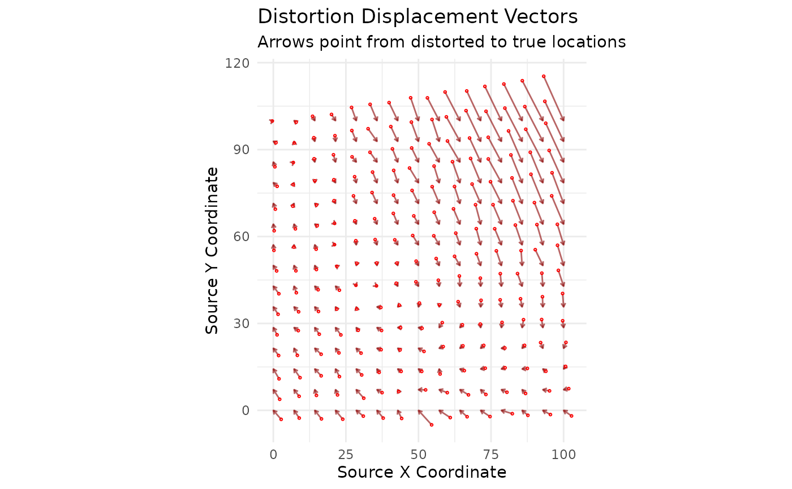
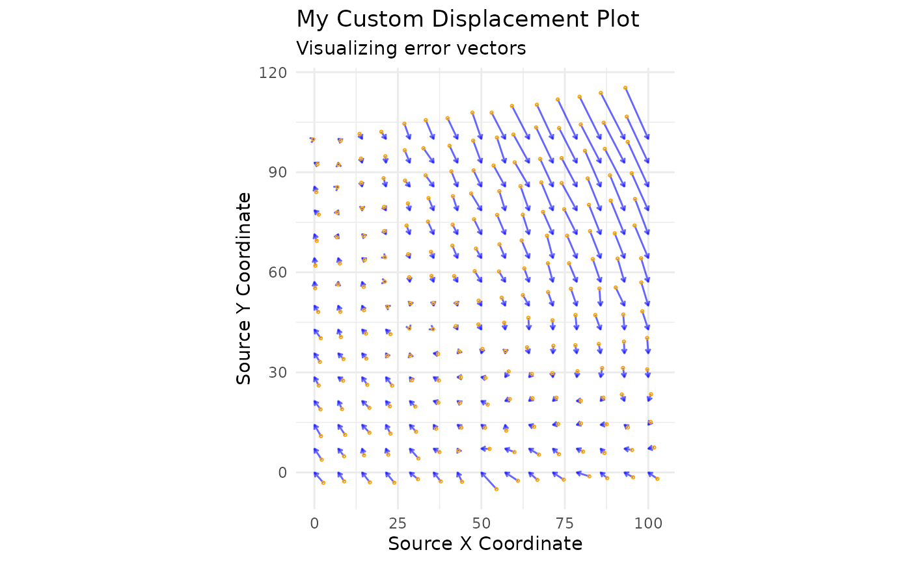

Plot Displacement Vectors
plot_displacement.RdCreates a visualization of the displacement vectors from source (distorted) to target (true) coordinates for a set of homologous points.
Usage
plot_displacement(
gcp_data,
title = "Distortion Displacement Vectors",
subtitle = "Arrows point from distorted to true locations",
arrow_color = "darkred",
point_color = "red"
)Arguments
- gcp_data
An
sfobject of homologous points, typically the output ofread_gcps(). Must containsource_x,source_y,target_x, andtarget_ycolumns.- title
A character string for the plot's main title.
- subtitle
A character string for the plot's subtitle.
- arrow_color
A character string specifying the color of the displacement arrows.
- point_color
A character string specifying the color of the points marking the source locations.
Details
This function is a key exploratory tool for understanding the nature
and magnitude of positional error in a dataset before correction. It plots
arrows that originate at the distorted source coordinates and point to
the correct target coordinates. This provides an immediate visual sense
of the spatial patterns in the distortion (e.g., rotation, scaling, or
non-linear warping).
Examples
# --- 1. First, create a demo dataset to work with ---
demo_files <- create_demo_data(type = "complex")
#> -> Homologous points saved to: /tmp/Rtmp0RXQjr/demo_gcps.csv
#> -> Distorted map saved to: /tmp/Rtmp0RXQjr/demo_map.shp
gcp_data <- read_gcps(gcp_path = demo_files$gcp_path, crs = 3857)
# --- 2. Create the default displacement plot ---
plot_displacement(gcp_data)

# --- 3. Customize the plot with different titles and colors ---
plot_displacement(
gcp_data,
title = "My Custom Displacement Plot",
subtitle = "Visualizing error vectors",
arrow_color = "blue",
point_color = "orange"
)
